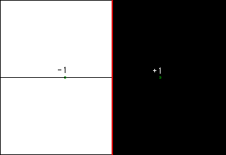

| Cayley used an example to introduce the problem of finding the basins of attraction of the roots of a function. |
| The complex function |
| Denoting the basins of attraction of these roots by A(+1) and A(-1), that is |
| A(+1) is all z0 from which Newton's method converges to |
| and |
| A(-1) is all z0 from which Newton's method converges to |
| Cayley proved |
| A(-1) is the left half of the complex plane, and |
| A(+1) is the right half of the complex plane. |
| In the picture, all points painted black converge to +1, all points painted white converge to -1. |
|  |
| We might expect that the points on the red vertical line are equally attracted to both +1 and -1, and consequently they will not converge at all. |
| This is true, and on this line iterating Newton's method is a chaotic process. |
| That is, on the boundary of the basins of attraction, the dynamics are chaotic. |
Return to Newton's Method Basins of Attraction.